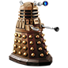
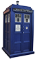
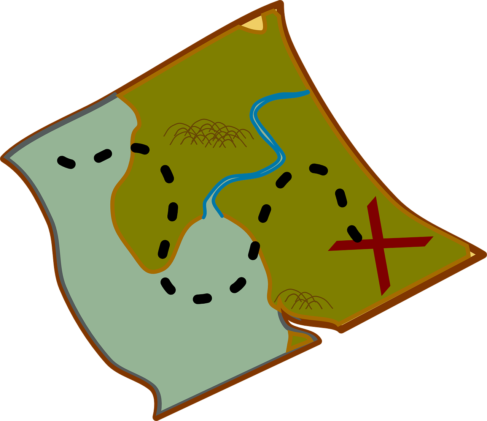

Whoniverse
Doctor Who rajongói oldal
Kezdőlap
 Doctor Who: A sorozat
Előzetes

Jelentősége
A sorozat ikonikus elemei – mint például a TARDIS időgép – rengeteg helyen megtalálhatóak Nagy-Britanniában: az utcákon, kávézókban, ajándékboltokban, ráadásul, ha ott járunk könnyen belecsöppenhetünk egy aktív forgatásába is a sorozat egy epizódjának.
Akármerre is járunk a világban, ha bemegyünk egy sci-fivel kapcsolatos rendezvényre, ott biztosan megtaláljuk a Doctor Who képviselőit, hiszen hatalmas rajongótábor alakult ki a sorozat körül. Nem csak fiatalok, hanem az idősek között is egy ismert sorozatról van szó, hiszen gyökerei visszanyúlnak egészen az 1960-as évekbe, sőt a mai alkotói, és színészei között sokan együtt nőttek fel a sorozat klasszikus szakaszával.
Akármerre is járunk a világban, ha bemegyünk egy sci-fivel kapcsolatos rendezvényre, ott biztosan megtaláljuk a Doctor Who képviselőit, hiszen hatalmas rajongótábor alakult ki a sorozat körül. Nem csak fiatalok, hanem az idősek között is egy ismert sorozatról van szó, hiszen gyökerei visszanyúlnak egészen az 1960-as évekbe, sőt a mai alkotói, és színészei között sokan együtt nőttek fel a sorozat klasszikus szakaszával.
Emellett a főszereplő – a Doktor – szerepe egy rendkívül nívós és elismert szerep a brit filmművészetben és kultúrában, így bárkinek, akit kiválasztanak rá hatalmas elvárásokkal kell szembenéznie mind színészi, mind a rajongókkal való kapcsolat térén. Az új Doktor kiválasztása mindig egy nagyon várt és ünnepélyes esemény a brit televízióban, és a színész kiválasztását rendszerint hosszú és nehéz titokban tartás időszaka követi.

Útmutató a sorozathoz
38 évad, hol kezdjem? ...
A sorozat szerkezetét tekintve két nagyobb részre bontható, de ezeken belül is megkülönböztetünk szakaszokat. A klasszikus Doctor Who (Doctor Who Classic) az eredeti 1963-tól 1989-ig futó sorozat, amelynek sajnos egy része részben a BBC gondatlansága miatt elveszett, és ma is keresik. Az igazi keményvonalas rajongók számára kötelező darab, viszont aki most csatlakozna be annak lehet kicsit keményfalat, hiszen a mai korszerű sorozatokhoz képest sokkal elavultabb, alacsony felbontású, fekete-fehér (eleinte), és mai szemmel nehezen emészthető. Ennek ellenére a története és csavarjai időtállók, így, ha valaki érzi magában a kitartást annak könnyedén javasoljuk.
A legtöbben a sorozat 2005-ös újjáélesztésével találkoznak, ami egy biztos pont a kezdésnek, hiszen újra felépíti az egész univerzumot, és megismerteti az eddig – klasszikus sorozatban – történteket, emellett rengeteg elemet átültet és tovább gondol abból, így a néző valamelyest betekintést nyer az öreg klasszikusba is 26 évad végig pörgetése nélkül. Ez viszont még mindig – jelen állás szerint – 12 évad, ami sok lehet egy nem túl elkötelezett nézőnek. Mindenképpen ez a 2005-ös NewWho 1. évad a legstabilabb kezdés egy leendő rajongónak, de ha ez a 12 évad még mindig sok, van egy utolsó mentsvár: a 2010-es 5. évad, ahol a NewWho második szakasza kezdődik. Itt ismét egy új vonalat vet a sorozat, sokat mutat a múltjából is, de könnyedén követhető egy új néző számára is. A harmadik szakaszt (2018 - ) semmiképpen nem ajánljuk hiszen az még annyira új, hogy nem adja át önmagában a sorozat egyedi érzetét.
A lenti táblázatban áttekintheted a sorozat szakaszait, és megjelöltük neked az ajánlott kiinduló pontokat.
| Kezdésnek nagyon ajánljuk | |
| Kezdésnek ajánljuk | |
| Kezdésnek nem ajánljuk |
(elveszett részek)
(2005-2009)
Russel T Davies
(showrunner)
(2010-2017)
Steven Moffat
(showrunner)
(2018 - )
Chris Chibnall
(showrunner)
- William Hartnell
- Patrick Troughton
- Jon Pertwee
- Tom Baker
- Peter Davison
- Colin Baker
- Sylvester McCoy
- Paul McGann
- Christopher Eccleston
- David Tennant
- Matt Smith
- Peter Capaldi
- Jodie Whittaker
Íratkozz fel hírlevelünkre
Ne maradj le legfrissebb sorozattal, rendezvényekkel, összejövetelekkel, nyereményekkel kapcsolatos híreinkről! A lentebb megtalálható űrlap segítségével feliratkozhatsz hírlevelünkre, így biztosan nem maradsz le semmiről, akkor sem, ha a weblapot már régóta nem látogattad. Biztos lehetsz benne, hogy adataid megbízhatóan kezeljük!